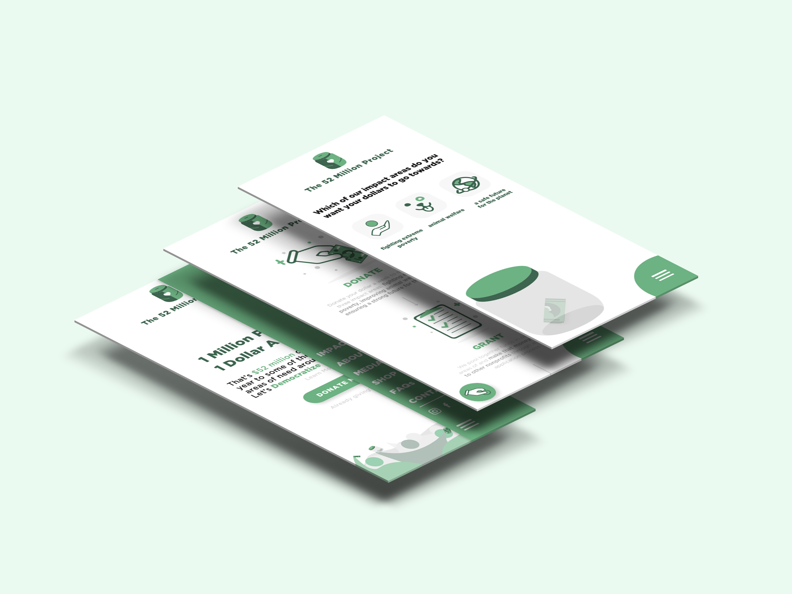
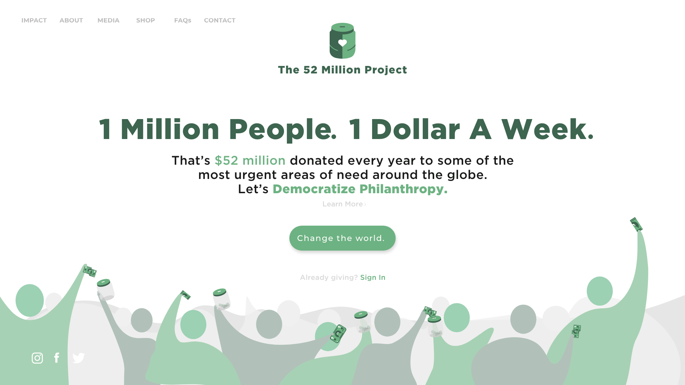
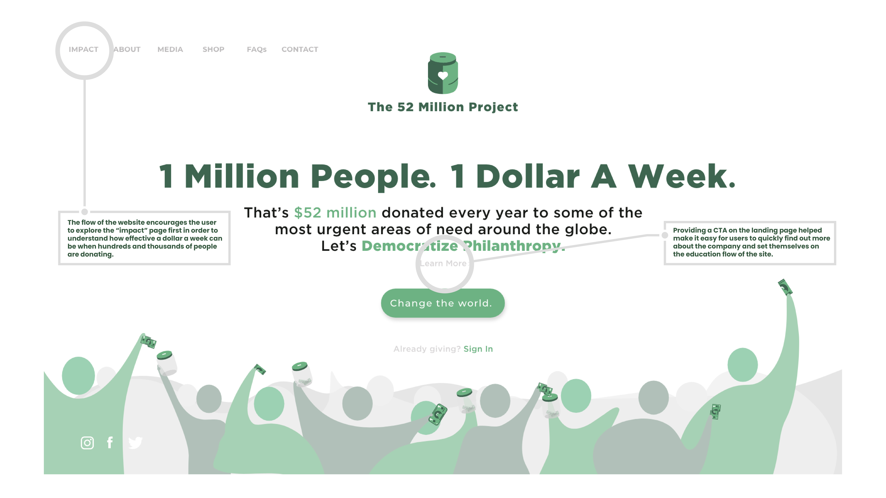
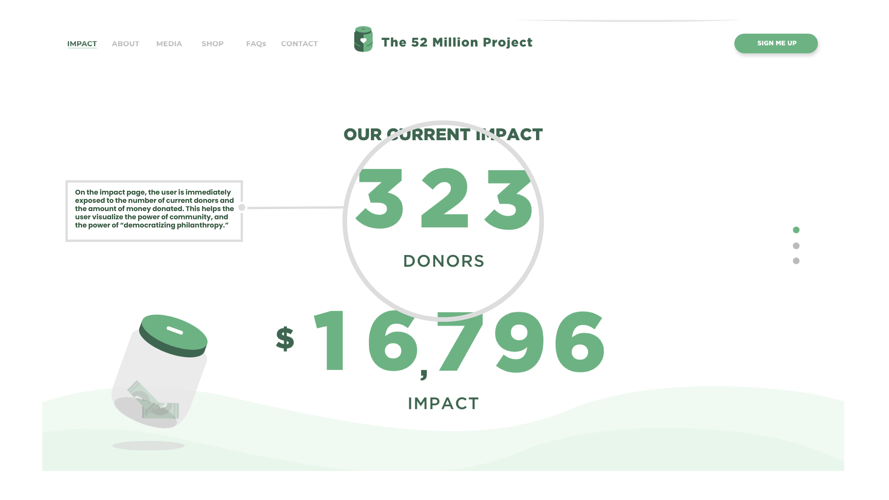
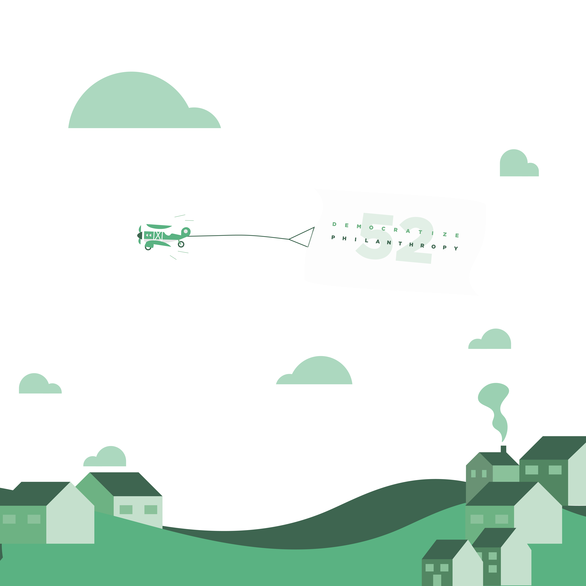
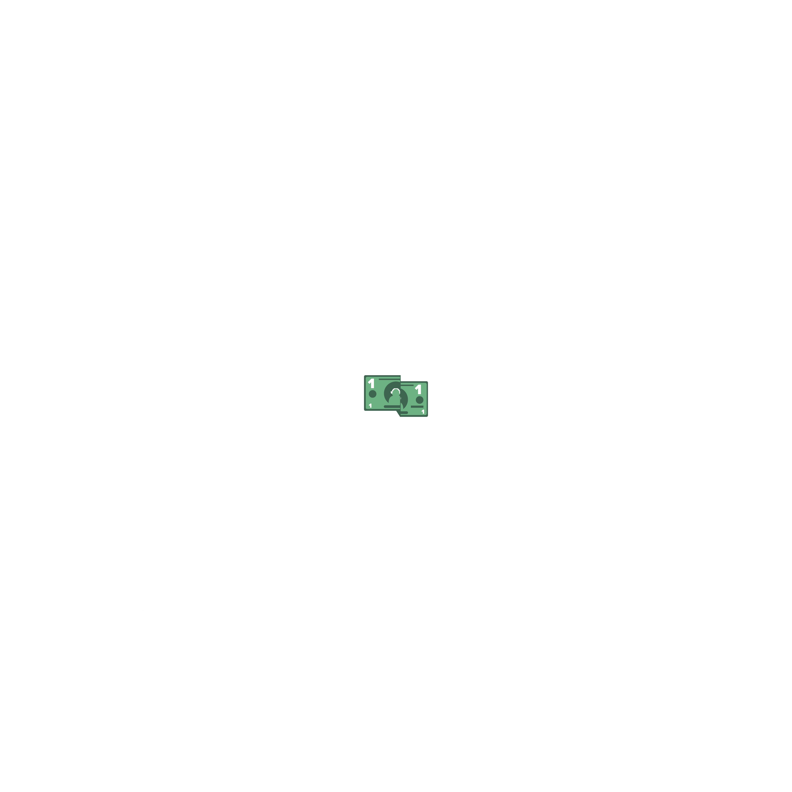
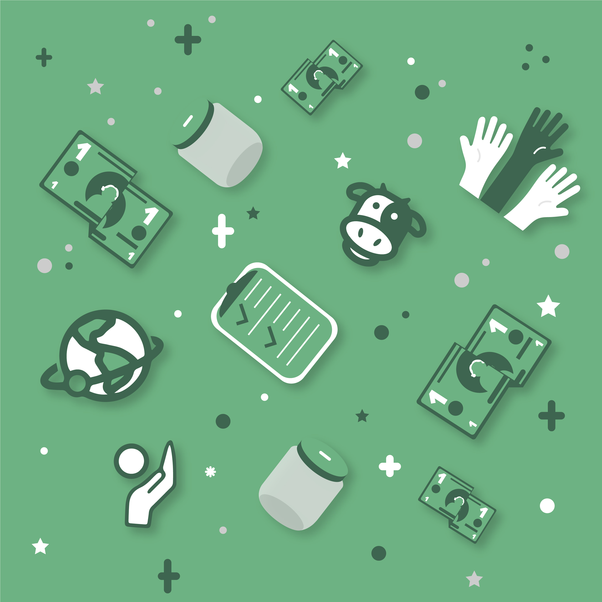

The 52 Million Project is a Columbus, Ohio nonprofit with a singular goal: prove that anyone can be a philanthropist — even with just $1 a week. As VP of Design and the organization's first executive committee member, I owned the end-to-end design of everything from brand identity to the donor acquisition funnel.
The core design challenge wasn't aesthetic — it was behavioral. How do you take a first-time visitor who has never heard of this organization and convert them into a recurring donor?

The landing page, designed to educate and convert first-time visitors.
Zero donors, zero brand recognition, zero trust. The website was our only acquisition channel — it had to educate, build credibility, and convert, all in a single session.
Most nonprofit sites fail at this because they bury the ask. We made the opposite bet: design the entire experience around a single conversion action, and remove every possible point of friction between landing and donating.
I started with a competitive analysis of high-converting nonprofit sites to understand what separated organizations that converted visitors from those that didn't. The pattern was clear — the best ones led with emotional clarity, established trust fast, and kept the primary CTA visible at every stage of the journey.
From that research I mapped a full user flow built around two distinct visitor types:

Click to enlarge

Click to enlarge
Persistent CTA across every page.
Rather than a single donation page buried in the nav, I designed a persistent call-to-action present at every scroll depth on every page. A visitor was never more than one tap away from converting — regardless of where they entered or how deep they went.
Education before conversion.
For the skeptical visitor, we designed a dedicated "secondary impact" page explaining exactly where donations go and how $1 a week compounds into meaningful change. A deliberate friction-reducer — answering the trust objection before it could kill the conversion.
Simplified information architecture.
Early wireframes spread content across four separate sections. Through stakeholder reviews and user flow analysis, I consolidated everything into a streamlined path that reduced cognitive load and kept visitors moving toward the donation action.
Mobile-first donation flow.
Knowing a significant portion of traffic would arrive on mobile, I designed and prototyped the donation flow mobile-first — reducing form fields, simplifying decisions, and ensuring the CTA was thumb-accessible at every stage.


Delivered a full donor acquisition experience — from brand identity through conversion flow — that gave a brand-new nonprofit the credibility and digital quality needed to compete with established organizations for donor attention and trust.
Beyond the website, I developed a consistent visual language across all social media channels — creating graphics, photography direction, and templated posts that reinforced the mission and kept the brand recognizable across every touchpoint.




